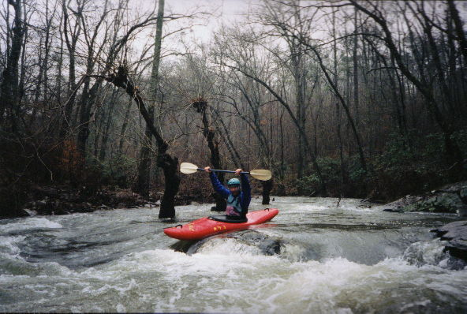
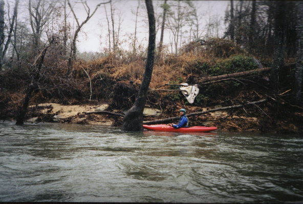
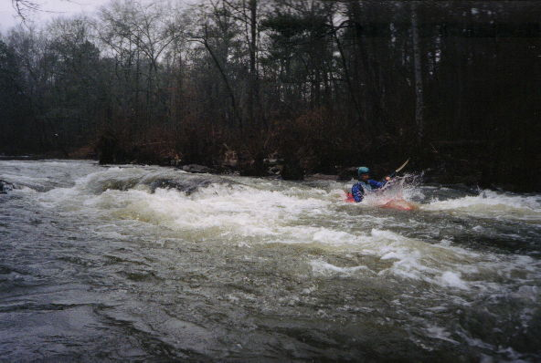
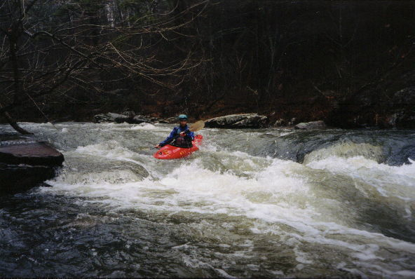
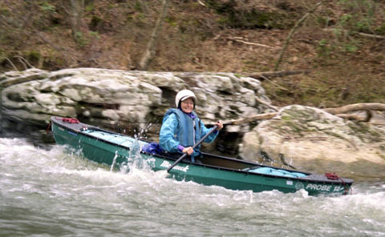

|  | John Parker cannot contain his enthusiasm. |
|  | (KMart Raft)
"We were not the first" "Solemn evidence of the ill-fated 1985 Chinese expedition can still be found" "Redneck + High Water + Raft = Oops" |
|  | JP powers through another class II. Actually, these were mellow and nice and fun. |
|  | A chute later in the run. |
|  | Kay Carroll enjoys the run (Murral Carroll Photo) |